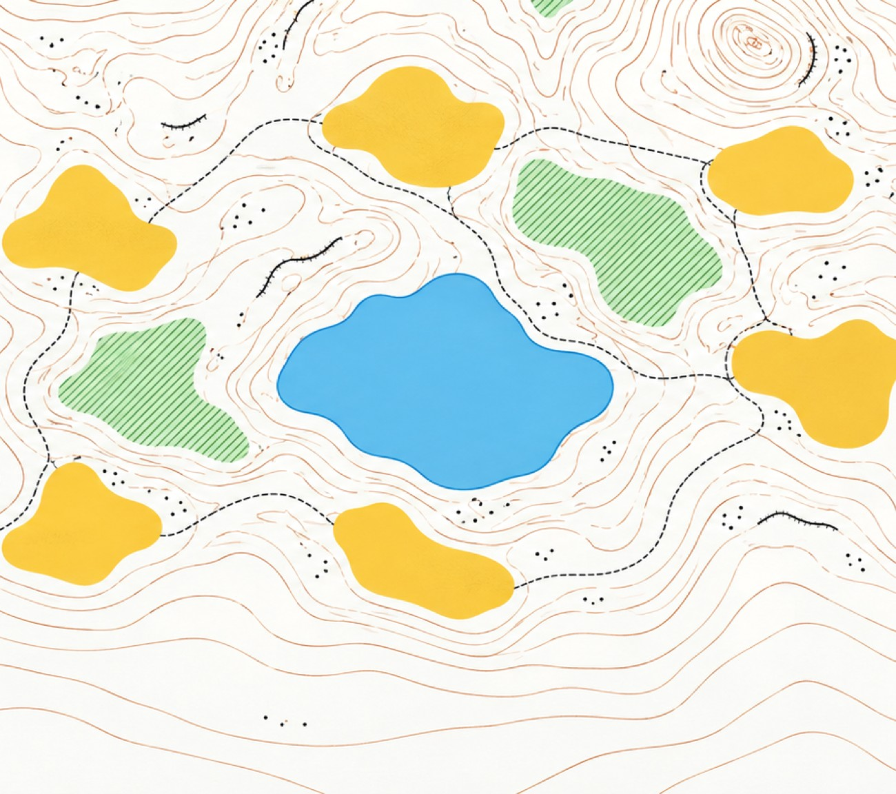
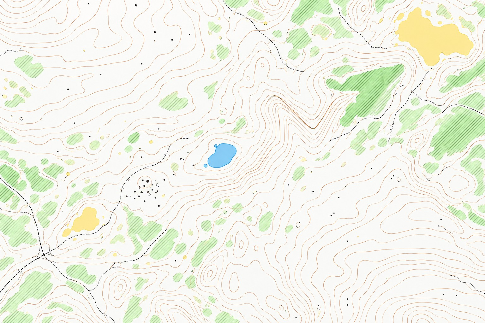
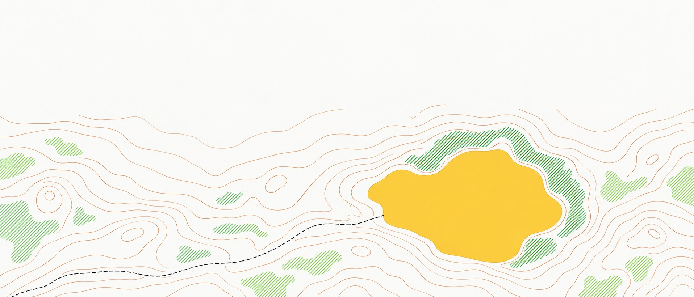

Free
USD 0
For repos under 50,000 lines.
- Answers in Slack or Teams
- The living map
- First-week courses
Waypoint reads your repo, your docs and the last year of pull requests, then answers new hires in Slack with links to the exact lines.
About 5 minutes to install. First map in about 20 for a mid-sized repo.
Mei Lin new hire, day 2 · 10:14
Where do refunds actually get calculated? I see rounding in two places.
Waypoint App 10:14
In refunds-worker. Lines 88–91 of src/calc/partial.ts do the maths; the rounding in checkout-web is display only since #4127. Owner: @ravi.s, Payments.
partial.ts#L88-91PR #4127
Works with
GitHub or GitLab, and Slack or Microsoft Teams.
It only reads. It never pushes code or merges anything.
Every answer already exists. It’s in a pull request from March, or in the head of the one person who wrote it.
How it answers
Each answer cites the file, the lines and the pull request that explains them, so a new hire can check it, not just trust it.
Mei Lin 10:14
Where do refunds actually get calculated?
Waypoint App 10:14
Reading refunds-worker…
In refunds-worker, lines 88–91. Rounding happens once, in minor units, since #4127.
86export function partialRefund(order, items) { 87 const paid = order.totals.paidMinor; 88 const share = items.reduce((s, i) => s + i.amountMinor, 0); 89 // round once, in minor units (#4127) 90 const refund = Math.min(paid, roundHalfEven(share)); 91 return { refundMinor: refund, currency: order.currency }; 92}
PR #4127 · Move refund rounding server-sideOwner @ravi.s

The map
Waypoint keeps a living map of your services and their owners, so “who do I ask?” has an answer too. It reads like the maps orienteers carry: the colour tells you how hard the going is.
First week
Waypoint writes each new hire a course through your code. Every control touches real files and names who to ask.

| Control | Day | Task | Where | Ask |
|---|---|---|---|---|
| 1 | Mon | Fix the flaky partial-refund test | refunds-worker/ | @ravi.s |
| 2 | Tue | Add the currency column to the invoice CSV export | billing-api/ | @dana.k |
| 3 | Wed | Read PR #3881 on idempotent ledger writes, then ask its author one question | ledger-db/migrations/ | @dana.k |
| 4 | Thu | Trace one checkout request end to end and add the trace to the docs | checkout-web → billing-api | @tomas.r |
| 5 | Fri | Ship a copy fix in the refund email | notifications/ | @jun.p |
Each course is written from your own repo. This one is an example.
Waypoint needs read access and nothing more. On Enterprise, run it on your own infrastructure.
Reads
Your repository
Your docs
The last year of pull requests
Never
Pushes code
Merges anything
USD 0
For repos under 50,000 lines.
USD 20per engineer, per month
12 engineers × USD 20 = USD 240 a month
By quote
Everything in Team, with self-hosting.
No. Waypoint only reads. It never pushes code or merges anything.
The repositories you pick, your docs and the last year of pull requests.
Installing the GitHub or GitLab app and picking repos takes about 5 minutes. The first map is ready in about 20 minutes for a mid-sized repo.
Yes. It works with GitHub or GitLab, and answers in Slack or Microsoft Teams.
Yes, on Enterprise, which is priced by quote and includes self-hosting.
Every answer links to the exact lines it is based on, so the code is one click away.
